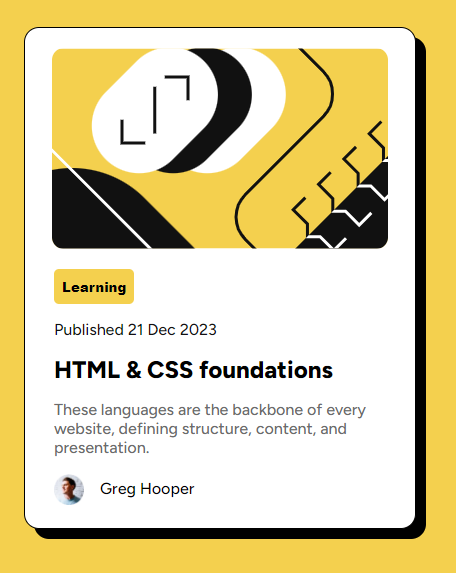

Um desafio do Front-End Mentor, um design para ser feito com poucas referências e imagens.

Um desafio do Front-End Mentor, um projeto web no estilo Accordion, todos os itens devem ser clicáveis e mostrarem um texto.

Um desafio do Front-End Mentor, 3 cartões que devem possuir um design responsivo(que funciona tanto no celular quanto no computador).